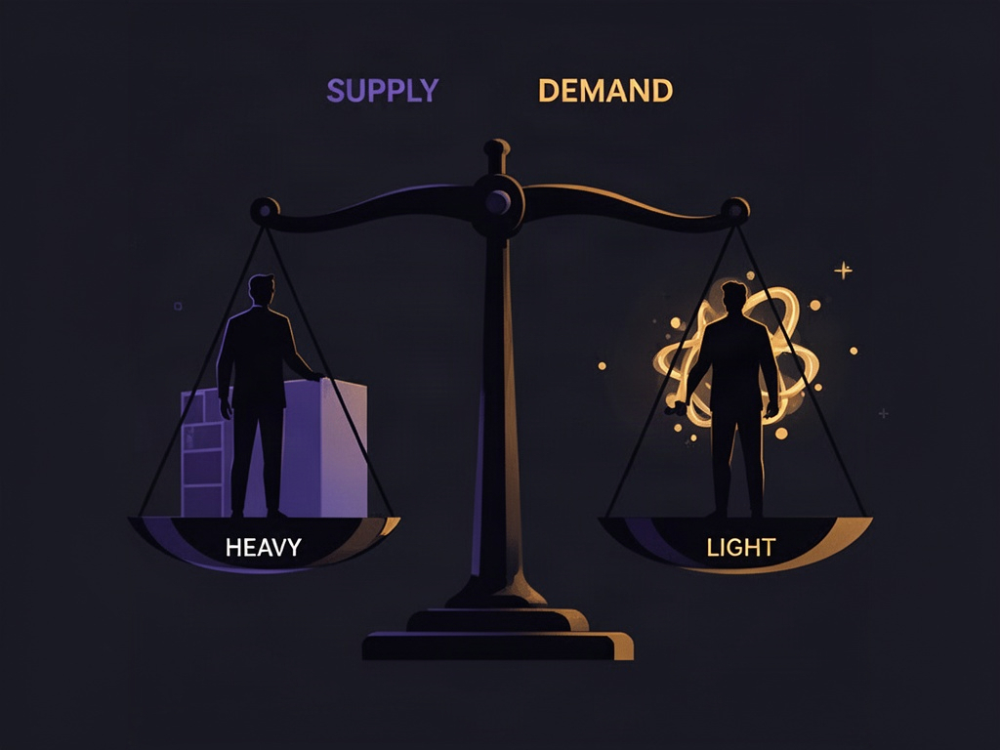
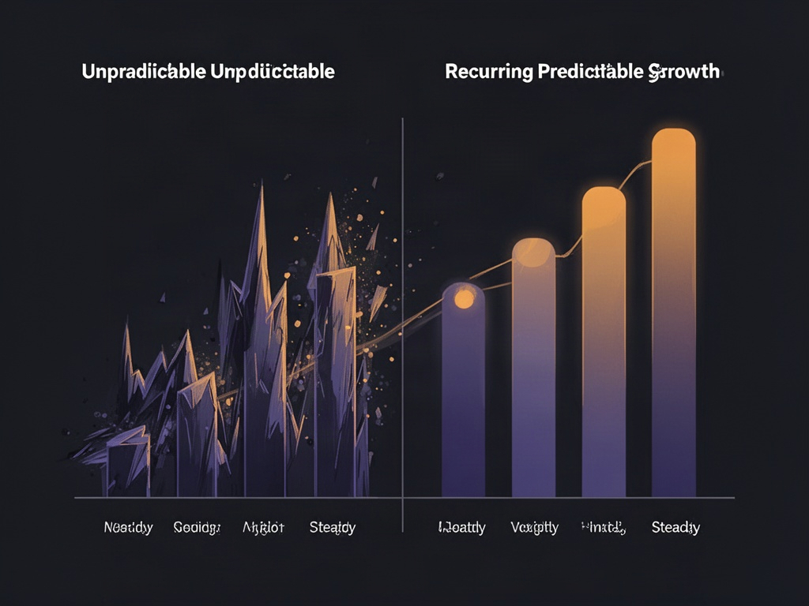

Você lança a funcionalidade que os usuários pediram. Ninguém paga. Lança outra. De novo, silêncio. O reflexo natural é achar que falta código — mais uma feature, mais um polish, mais um mês de trabalho. Quase nunca é isso.
Tem um teste de 10 segundos que expõe o problema na hora. Complete a frase: "o cliente me paga porque com isso ele ___". Se a resposta terminar em algo como "se organiza", "fica mais produtivo" ou "economiza tempo", você não achou a dor real — achou o sintoma. Ninguém paga por organização. Ninguém paga por produtividade em si. A pessoa quer ganhar mais dinheiro, quer uma vida melhor, quer resolver um problema concreto e específico. O ponto final da frase é sempre outro lugar, mais adiante na cadeia de consequências.
Isso parece óbvio dito assim, mas é a armadilha mais comum em produto: confundir a ferramenta com o resultado que ela entrega. Um calendário de postagem organiza — mas ninguém paga pra se organizar. As pessoas pagam pra ganhar mais seguidores, fechar mais vendas, ou parar de perder oportunidade por falta de consistência. A dor real fica uma ou duas camadas abaixo da funcionalidade.
O primeiro cliente B2B não quer comprar — quer construir junto
Vender um software que ainda não roda direito, sem case nenhum pra mostrar, é a parte mais difícil de qualquer B2B early-stage. A saída mais eficaz não é baixar o preço — é tirar o preço da mesa. Em vez de pedir dinheiro, você propõe construir algo específico pra aquele primeiro cliente de graça, em troca de feedback direto e de virar o case que abre a porta pro segundo.
Isso muda completamente a dinâmica da conversa: você deixa de ser um vendedor tentando convencer alguém a arriscar dinheiro num produto não-provado, e vira um parceiro de design construindo a solução ao lado de quem sente o problema na pele todo dia. O primeiro cliente vira design partner, não conta a receber.

Marketplace: o problema do ovo e da galinha tem uma resposta certa
Todo marketplace de dois lados enfrenta a mesma pergunta paralisante: quem eu trago primeiro, quem oferece o serviço ou quem consome ele? Motorista ou passageiro? Anfitrião ou hóspede? Prestador de serviço ou cliente?
A resposta estruturada divide os dois lados em hard user e soft user. O hard user é quem faz o trabalho pesado — quem presta o serviço, quem gera o inventário, quem entrega o resultado. É ele que você precisa conquistar primeiro, porque sem oferta não existe demanda a ser satisfeita.
Mas tem uma trava real nesse caminho: sem dinheiro circulando, o hard user não fica. Você pode trazer os melhores profissionais da praça pra sua plataforma, mas se ninguém está pagando por aquele serviço ali dentro, eles vão embora tão rápido quanto chegaram. Então a pergunta seguinte, imediatamente depois de "quem é o hard user", é "quem é que efetivamente paga" — e é aí que a energia inicial de aquisição precisa se concentrar também, em paralelo.
Distribuição: um canal novo vale mais que uma feature nova
Existe uma armadilha sutil em tratar cada novo formato de produto — um app mobile, uma extensão, uma integração — como "melhoria de experiência". Às vezes é exatamente o oposto: é um canal de distribuição novo, e canais de distribuição multiplicam alcance de um jeito que nenhuma otimização de UX consegue. Uma loja de aplicativos entrega seu produto pra dezenas de países automaticamente, sem você montar operação local nenhuma. Um produto que cresce de forma consistente enquanto ainda tem fricção básica não resolvida (uma função elementar que devia existir desde o dia um) é sinal de que o crescimento está vindo de outro lugar — geralmente de canal, não de polish. Vale perguntar, antes de investir mais tempo em refinar o que já existe: essa próxima coisa que vou construir abre uma porta nova pra alguém me encontrar, ou só deixa mais bonito pra quem já me encontrou?
Investimento vem de rede, não de pitch
Tem uma inversão contraintuitiva que funciona bem pra levantar os primeiros cheques: em vez de chegar vendendo a solução pronta, você chega pedindo opinião. Mostra o que está construindo, admite que é novo, pede uma dica. Isso substitui uma conversa de venda — que naturalmente ativa ceticismo — por uma conversa de colaboração, que ativa investimento emocional de quem está do outro lado. A lógica por trás é simples: quando você pede dinheiro, a pessoa avalia risco; quando você pede conselho, a pessoa se torna parte da história.

Sem recorrência, não existe previsibilidade
Cobrar por uso avulso (créditos, pacotes, "pague conforme usa") parece flexível, mas trava qualquer capacidade de planejamento — você nunca sabe quanto vai faturar no mês seguinte. A migração pra um modelo de assinatura recorrente não é só uma mudança de precificação: é o que transforma receita instável em receita previsível, e previsibilidade é o que permite contratar, investir em aquisição, e tomar decisão de médio prazo com confiança.
Uma peça que se encaixa bem nesse modelo mais maduro: uma vez que você sabe quanto vale um cliente ao longo do tempo, dá pra estruturar um programa de indicação ou afiliados pagando uma fração disso — tipicamente uma fração bem menor do que custaria adquirir o mesmo cliente via mídia paga.
O padrão por trás de todos os pontos
Nenhum desses aprendizados é sobre tecnologia. É sobre entender profundamente quem paga, por que paga, e como o dinheiro efetivamente circula dentro do sistema que você está construindo. Ferramenta de IA nenhuma resolve isso por você — ela acelera a execução depois que a pergunta certa já foi respondida. A pergunta certa continua sendo a mesma de sempre: complete a frase "o cliente me paga porque com isso ele ___", e não pare até a resposta ser um resultado de verdade, não uma sensação boa.